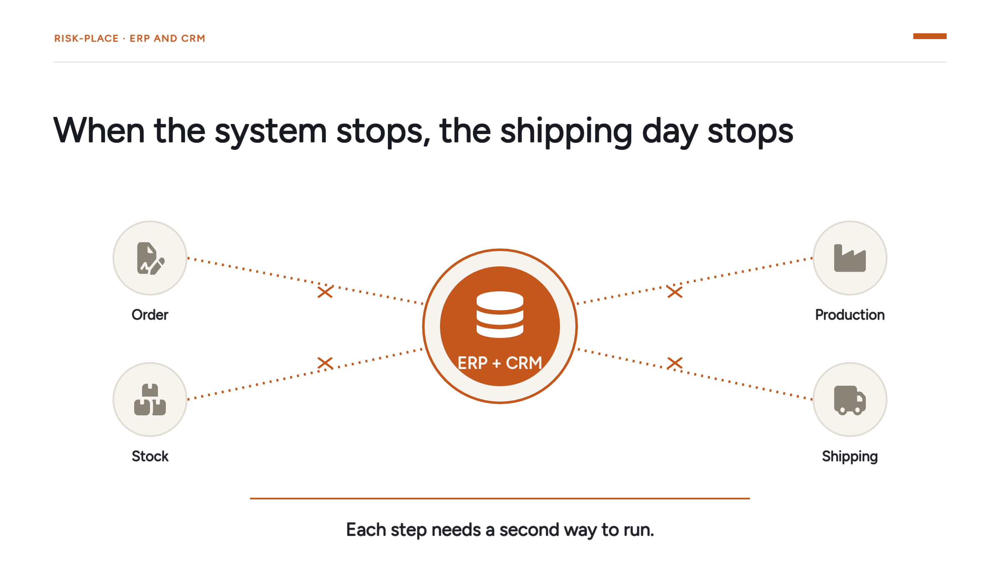

A sales manager knows the customer. A warehouse supervisor recognises the pallet. Production has finished the work. Yet nobody can confidently connect those facts into a shipment because the shared systems are unavailable. This is not only an IT outage; it is a break in the chain of business evidence.

Follow the evidence, not just the software
Take one order and ask where each fact comes from: the agreed price, the promised terms, the available batch, the production specification and the release document. Include the person who has authority to approve exceptions.
If every answer depends on the same unavailable record, the departments are not independently operational. A healthy-looking warehouse does not remove that dependency.
Choose the small flow that can safely continue
Do not promise a manual version of the whole company. Select common products, known customer terms and a limited volume that can be supported by a dated stock export and prepared documents.
Customer-specific configurations, regulated batches and exceptional prices may need to wait. The boundary is a sign of control, not a failure of preparation.
Make the manual path a shared process
- Use a dated, accessible export of the few balances and details that matter.
- Give order and release documents a common numbering rule.
- Name who may promise a date, release goods and approve an exception.
- Record every movement in one log that survives a shift handover.
The purpose is to keep the same limited story visible to sales, the warehouse and the gate. Separate notebooks can preserve activity while losing control of the stock.
Rehearse the return as carefully as the outage
When the system becomes available, the work is not finished. Manual orders, physical movements and customer promises must be entered and reconciled before the database becomes the trusted record again.
A ransomware readiness check tests the complete loop: the alternative order path, the permitted shipment, the record kept during the outage and the return to normal accounting.
Questions owners ask
Why is a backup not enough to keep shipping?
A backup supports data restoration. Shipping also needs current evidence, decision rights and documents while the live system remains unavailable.
Which orders belong in the manual path?
A deliberately limited set of common orders supported by dated data, known terms, prepared documents and named authority.
When can the system lead the business again?
After manual transactions and physical movements have been entered and reconciled, so the restored record agrees with what actually happened.